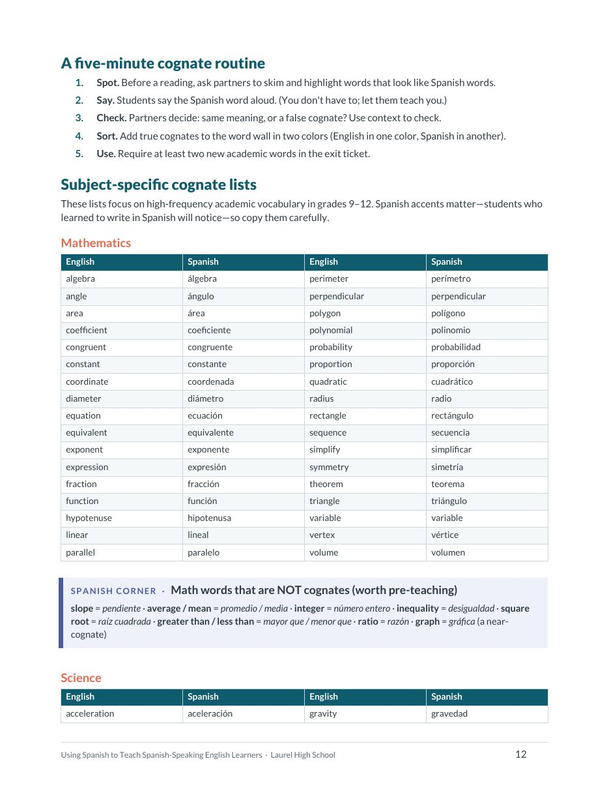
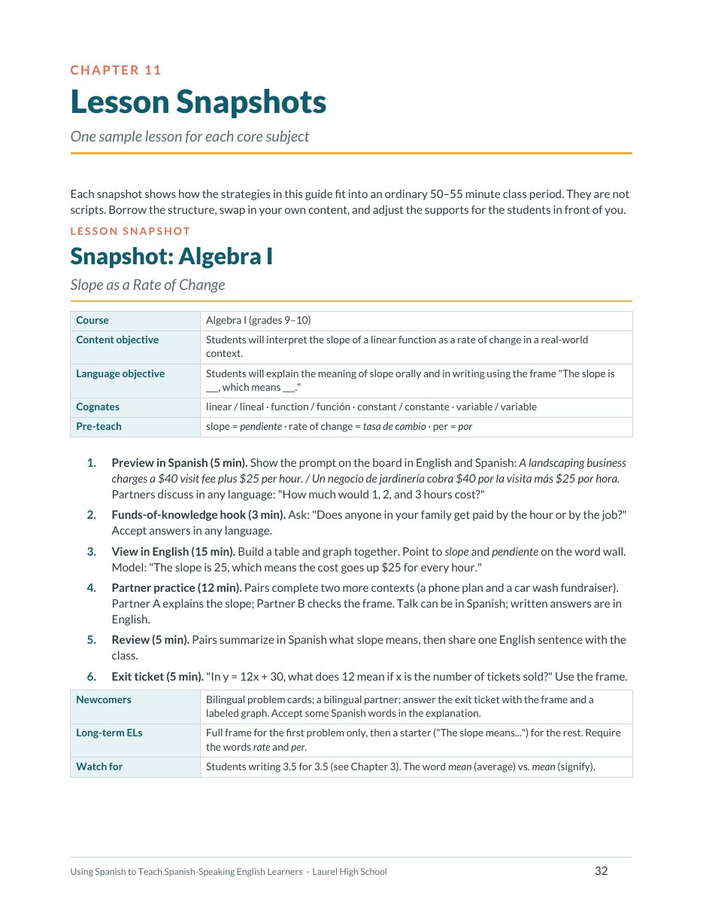
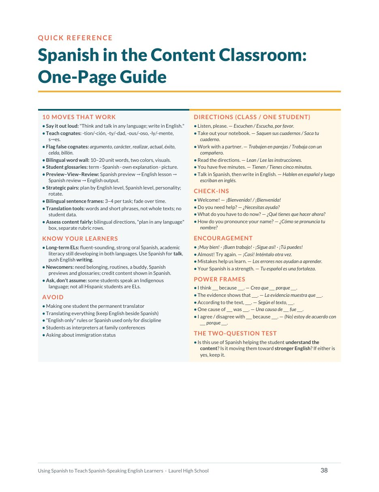

Start here
A resource your students carry into every class
About one in three students at Laurel High School is Hispanic. Many are English learners — and every one of them brings a strong, living home language into your room each day.
This guide was written for teachers who do not speak Spanish. You do not need to translate your lessons or become a language teacher. You need a handful of research-backed routines, a few dozen words and phrases, and a willingness to let students use everything they know to learn your content. Every strategy here can be tried next week; every chapter ends with reflection questions for a PLC.
Think and talk in any language; write in English. Spanish in your classroom is a tool for learning, not a distraction from it. English remains the goal for the final product — and Spanish is one of the fastest routes to get there.
Read Chapter 1, skim Chapter 3 for your subject's cognate list, and print the one-page quick reference (page 38). Planning a unit? Start with your subject's lesson snapshot in Chapter 11 and borrow its structure.
Chapter 1
Why Spanish belongs in your classroom
Three bodies of research, one conclusion: a student's first language is one of the best tools available for learning English and learning content.
Lubliner and Hiebert (2011) identified 426 English–Spanish cognates among the 570 headwords of the Academic Word List — roughly three out of four. The bridge exists. Nagy and colleagues (1993) found students do not always notice it on their own, so we have to point it out.
The legal floor is also in the guide: Lau v. Nichols (1974), Plyler v. Doe (1982), and the 2015 joint Dear Colleague letter from the U.S. Departments of Justice and Education on English learner students and limited English proficient parents.
Chapter 2
Long-term ELs and newcomers need different things
Most ELs in content classes are Emerging or Progressing on ELPA21. Some have been in U.S. schools since kindergarten; a few arrived this year. Spanish helps both — differently.
Long-term English learner · 5+ years in U.S. schools
- Often sounds fluent in social English, so teachers miss that they are an EL
- Academic reading and writing in English lag behind oral English
- Strong oral Spanish; academic Spanish literacy varies, often limited — don't hand them a Spanish textbook and assume it helps
- Best uses of Spanish: talk before writing, cognates, checking understanding with a partner
- Watch for: letting Spanish replace English writing; assuming no support is needed because they "sound fluent"
Newcomer · recently arrived
- Beginning English; oral Spanish often strong; literacy depends on prior schooling (some have interrupted education)
- Some speak an Indigenous language — K'iche', Mam, Q'anjob'al — so Spanish may be their second language. Ask; never assume
- Best uses of Spanish: previews, bilingual glossaries, Spanish texts or videos on the topic, a bilingual partner, responding in Spanish to show content knowledge
- Watch for: isolating them, leaving them silent in the back, translated worksheets with no English exposure
- Motivation keys: belonging, safety, visible small wins, a buddy, a name pronounced correctly
- What language(s) do you speak at home? ¿Qué idioma(s) hablas en casa?
- Can you read and write in Spanish? A little, some, or a lot? ¿Puedes leer y escribir en español? ¿Un poco, algo o mucho?
- Where did you go to school before Laurel High? ¿Dónde estudiaste antes de Laurel High?
- What helps you learn best in class? ¿Qué te ayuda a aprender mejor en clase?
- What do you want me to know about you? ¿Qué quieres que yo sepa de ti?
Chapter 3
Cognates: your built-in bridge
The "hard" words in your textbook are often the easy words for a Spanish speaker. Teach the patterns, then the exceptions.
| English pattern | Spanish pattern | Examples |
|---|---|---|
| -tion | -ción | nation / nación · solution / solución · revolution / revolución |
| -ty | -dad / -tad | gravity / gravedad · density / densidad · liberty / libertad |
| -ous | -oso / -osa | famous / famoso · numerous / numeroso |
| -ic, -ical | -ico / -ica | scientific / científico · historic / histórico |
| -ly | -mente | rapidly / rápidamente · finally / finalmente |
| -ize | -izar | analyze / analizar · organize / organizar |
| s + consonant | es + consonant | structure / estructura · species / especie · state / estado |
| ph, th | f, t | photosynthesis / fotosíntesis · theory / teoría |
- SpotBefore a reading, partners skim and highlight words that look like Spanish.
- SayStudents say the Spanish word aloud — let them teach you.
- CheckSame meaning, or a false cognate? Use context.
- SortTrue cognates go on the word wall in two colors.
- UseTwo new academic words in the exit ticket.
The guide's subject lists
34 cognates — ecuación, coeficiente, hipotenusa, polinomio, probabilidad — plus the words that are not: slope = pendiente, average = promedio, integer = número entero, square root = raíz cuadrada.
32 cognates — fotosíntesis, cromosoma, hipótesis, densidad, molécula — and the false friend every biology teacher meets: a living cell is célula, not celda.
28 cognates — democracia, constitución, inmigración, imperialismo — plus pre-teach terms: civil rights = derechos civiles, amendment = enmienda, slavery = esclavitud, treaty = tratado.
28 cognates — metáfora, inferencia, protagonista, ironía, símil — and the ELA false cognate that matters most: argumento often means the plot, and discusión is usually a quarrel.
In Spain, Colombia and Argentina, a comma marks the decimal and a period separates thousands: 3,5 means 3.5 and 1.000 means one thousand. Mexico and most of Central America use the U.S. convention. If a student writes 3,5 they may not be making an error — ask, and teach the U.S. convention explicitly.

Chapters 4–10
Ten moves that work
From the one-page quick reference. Each one has its own chapter, with a how-to for teachers who speak no Spanish.
| The move | In practice | |
|---|---|---|
| 1 | Say it out loud | "Think and talk in any language; write in English." Many students were told in past classrooms that Spanish was not allowed — the sentence matters. |
| 2 | Teach cognates | -tion/-ción, -ty/-dad, -ous/-oso, -ly/-mente, s → es. Patterns are clues, not rules. |
| 3 | Flag false cognates | argumento, carácter, realizar, actual, éxito, celda, billón, embarazada, molestar. Students love catching them. |
| 4 | Bilingual word wall | 10–20 unit words, two colors, a star for cognates, a visual beside each. Students build it; you point to it while you teach. |
| 5 | Student glossaries | Term · Spanish · own explanation in any language · picture. Allowed as a reference on classwork and, where appropriate, quizzes. |
| 6 | Talk → Plan → Write | Partners talk 2–3 minutes in any language, jot a plan in any language, write in English with a frame, share in English. The most powerful move in the guide. |
| 7 | Preview–View–Review | A short Spanish video or summary before the English lesson; Spanish partner review after; English exit ticket. (Freeman & Freeman) |
| 8 | Strategic pairs & bilingual frames | Pair by English level, Spanish level, content knowledge and personality; rotate so no one becomes the class translator. Post 3–4 frames per task; fade them. |
| 9 | Translation tools, used well | Words and short phrases, not whole texts. English beside Spanish, never Spanish-only. No student names or grades in a public tool. |
| 10 | Assess content fairly | Ask what the test measures. Bilingual directions, a "plan in any language" box, credit for correct concepts in mixed-language answers, separate rubric rows for content and language. |
- I think ___ because ___. Creo que ___ porque ___.
- The evidence shows that ___. La evidencia muestra que ___.
- According to the text, ___. Según el texto, ___.
- One cause of ___ was ___. Una causa de ___ fue ___.
- My hypothesis is that if ___, then ___. Mi hipótesis es que si ___, entonces ___.
- The slope is ___, which means ___. La pendiente es ___, lo que significa que ___.
When you are not sure whether a use of Spanish is helping, ask: Is it helping the student understand the content? Is it moving the student toward stronger English? If either is yes, it is probably a good use. If both are no, adjust.
Common pitfalls the guide names
Making the same bilingual student the class interpreter interrupts their own learning and can feel like an unpaid job. Rotate, use bilingual materials, and ask privately whether they are comfortable helping.
Spanish-only handouts remove the English input students need to grow. Keep English and Spanish side by side; translate directions and key ideas, not entire texts.
If the only Spanish a student hears from you is a correction, that is the message they receive. Make most of it welcoming, instructional and encouraging.
Request a qualified interpreter through the front office or the ENL program. And never ask students or families about immigration status — Plyler v. Doe (1982).
Chapter 8
A teacher's Spanish phrase bank
Pick three phrases this week — a greeting, a direction, an encouragement — and use them every day. Let students correct your pronunciation; it turns them into experts.
| English | To one student (tú) | To the class (ustedes) |
|---|---|---|
| Listen, please. | Escucha, por favor. | Escuchen, por favor. |
| Take out your notebook. | Saca tu cuaderno. | Saquen sus cuadernos. |
| Work with a partner. | Trabaja con un compañero. | Trabajen en parejas. |
| Read the directions. | Lee las instrucciones. | Lean las instrucciones. |
| You have five minutes. | Tienes cinco minutos. | Tienen cinco minutos. |
| Show me. | Muéstrame. | Muéstrenme. |
You can talk in Spanish with your partner, then write in English. Puedes hablar en español con tu compañero y luego escribir en inglés.
Now say it in English, please. Ahora dilo en inglés, por favor.
Is this word similar in Spanish? ¿Esta palabra se parece a una palabra en español?
Welcome! ¡Bienvenido! / ¡Bienvenida!
How do you pronounce your name? ¿Cómo se pronuncia tu nombre?
Show me the part you don't understand. Muéstrame la parte que no entiendes.
Almost! Try again. ¡Casi! Inténtalo otra vez.
Mistakes help us learn. Los errores nos ayudan a aprender.
Your Spanish is a strength. Tu español es una fortaleza.
One moment, please. I'll get an interpreter. Un momento, por favor. Voy a buscar un intérprete.
Your son / daughter is doing well in class. A su hijo / hija le va bien en la clase.
Thank you for your support. Gracias por su apoyo.
The guide includes a one-minute pronunciation key and a note on tú, ustedes and the respectful usted for parents. Pizarrón is common in Mexico and Central America; pizarra is also widely understood.
Chapter 11
Four lesson snapshots
One sample lesson per core subject, each in an ordinary 50–55 minute period, each with a content objective, a language objective, cognates to point out, words to pre-teach, and notes for newcomers and long-term ELs.
A landscaping business charges $40 plus $25 per hour, previewed in English and Spanish. Frame: The slope is ___, which means ___. Pre-teach pendiente, tasa de cambio, por. Watch for 3,5 written for 3.5.
Spanish video preview, cognate hunt on the lab handout, a leaf-disk demonstration, then Talk → Plan → Write: Because ___, the plant ___. As a result, ___. False cognate: cell = célula.
Groups discuss why voting matters, then analyze an excerpt of Fannie Lou Hamer's 1964 testimony with a bilingual glossary. Frame: This primary source shows that ___ because ___. Keep the focus on the history; never ask about status.
Should all students learn a second language? Debate in any language, a false-cognate moment on argumento and discusión, a color-coded model paragraph, planning in any language, writing in English with fading frames.

Chapter 12
A 30-day plan
You do not need to do everything at once. One move, used consistently, then another.
- Week 1Learn every name and how to pronounce it. Three Spanish phrases daily. Give the language survey.
- Week 2Bilingual word wall for the current unit. One cognate pattern. Introduce "Talk in any language, write in English."
- Week 3One Preview-View-Review lesson. Three bilingual frames posted. Strategic pairs planned.
- Week 4A "plan in any language" box on an assessment. One positive message home in Spanish. Meet with the ENL teacher to reflect.
A unit planning checklist, a strategic pairing planner (ELPA21 level · Spanish strength · LTEL or newcomer · good partners), and a bilingual glossary template — page 40.
The guide
Inside the guide
Forty pages, fully referenced. The one-page quick reference on page 38 is built to print and keep on a desk.
| Chapter | What's in it | |
|---|---|---|
| 1 | Why Spanish belongs in your classroom | Cummins, Moll, García, the cognate research, the National Literacy Panel, and the legal floor |
| 2 | Knowing your learners | ELPA21 levels at a glance, long-term ELs, newcomers, SIFE, Indigenous-language speakers, a language survey |
| 3 | Cognates: your built-in bridge | Spelling patterns, a five-minute routine, four subject lists, false friends, number formatting |
| 4 | Making Spanish visible | Bilingual word walls and student-made glossaries |
| 5 | Talk in Spanish, write in English | Talk → Plan → Write, Preview-View-Review, strategic pairing, 18 bilingual sentence frames |
| 6 | Translation tools, used well | What they are good for, where they fail, privacy, teaching students to use them to learn |
| 7 | Honoring Spanish in assessment | What am I measuring? Seven ways to honor Spanish; LTELs, newcomers, and state testing rules |
| 8 | A teacher's Spanish phrase bank | Pronunciation, tú/ustedes/usted, directions, support, check-ins, encouragement |
| 9 | Partnering with families | Responsibilities under the 2015 guidance, interpreters, Plyler, practical steps, a positive-postcard routine |
| 10 | Common pitfalls | Eleven habits that undercut learning or dignity, and what to do instead |
| 11 | Lesson snapshots | Algebra I, Biology, U.S. History, English II |
| 12 | Putting it into practice | A 30-day plan and reflection questions; quick reference, references, planning tools |

New: the Teacher Handout Folder. Ten one-page handouts from this guide — cognate lists by subject, the phrase bank, frames by level, newcomer week one, a family call script — built to print and keep.
The guide. Forty pages as a PDF — read it, print the quick reference, or share it with a department.
Spanish phrases reflect widely understood Latin American usage; vocabulary varies by country, so welcome your students' versions. Written for the content faculty of Laurel High School; free to copy and share for professional learning.